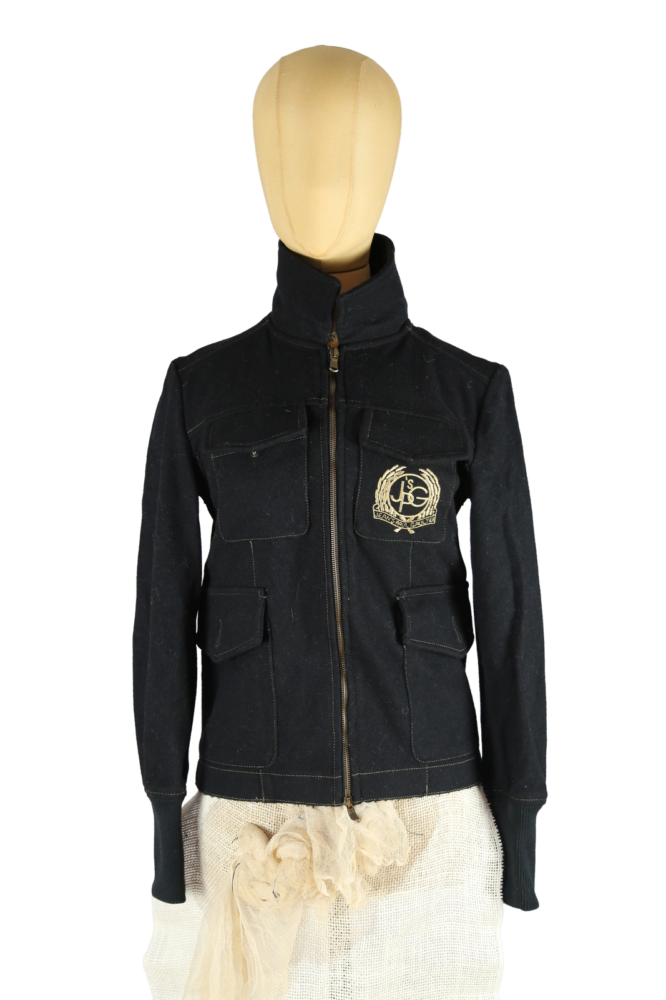

Jean Paul Gaultier
170.00 €
Aus dem kuratierten Archiv von Disorder119. Strukturiert gearbeitete Jacke von Jean Paul Gaultier in tiefem Schwarz. Die körpernahe Silhouette folgt klar der Linie des Oberkörpers und wird durch präzise gesetzte Teilungsnähte definiert. Der hohe Stehkragen verleiht dem Piece eine funktionale, beinahe uniforme Ausstrahlung und steht in direktem Bezug zur militärisch inspirierten Designsprache des Hauses. Der durchgehende Frontreißverschluss sorgt für eine klare, vertikale Führung. Mehrere aufgesetzte Taschen unterstreichen den utilitären Charakter der Jacke. Auf der Brust befindet sich ein gesticktes Emblem, das auf Archivcodes von Jean Paul Gaultier verweist. Kontrastnähte setzen dezente Akzente und betonen die konstruktive Verarbeitung. Ein seitlich eingenähtes Markenlabel rundet das Design subtil ab. Ein zeitloses Archivstück mit klarer, funktionaler Ästhetik. Details: Marke: Jean Pa
Im Archiv ansehen & in den Warenkorb →